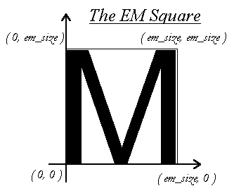
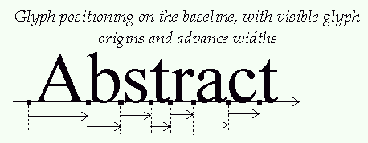
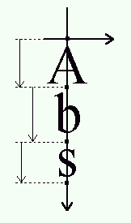
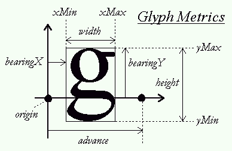
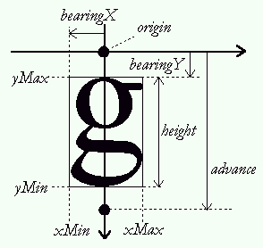

An introduction to glyphs, as used and defined in
the FreeType engine:
version 1.0 (html version)
David Turner - 14 Jan 98
Introduction:
This article discusses in great detail the definition
of glyph metrics, per se the TrueType specification, and the way they
are managed and used by the FreeType engine. This information is
crucial when it comes to rendering text strings, either in a
conventional (i.e. roman) layout, or with vertical or right-to-left
ones. Some aspects like glyph rotation and transformation are
explained too.
Comments and corrections are highly welcomed, and can be sent to
the
FreeType developers list.
I. An overview of font files
In TrueType, a single font file is used to contain
information related to classification, modeling and rendering of text
using a given typeface. This data is located in various independent
"tables", which can be sorted in four simple classes, as described
below:
We call face data, the amount of information related to a
given typeface, independently of any particular scaling,
transformation and/or glyph index. This usually means some
typeface-global metrics and attributes, like family and styles,
PANOSE number, typographic ascenders and descenders, as well as
some very TT-specific items like the font 'programs' found in the
fpgm and prep tables, the gasp table,
character mappings, etc.
In FreeType, a face object is used to model a font file's
face data.
We call instance a given pointsize/transformation, at a
given device resolution (e.g. 8pt at 96x96 dpi, or 12pt at
300x600 dpi, etc). Some tables found in the font files are used
to produce instance-specific data, like the cvt table, or
the prep program. Though they're often part of the face
data, their processing results in information called instance
data.
In FreeType, it is modeled through an instance object,
which is always created from an existing face object.
We call glyph data the piece of information related to
specific glyphs. This includes the following things that are
described in more details in the next sections:
The FreeType engine doesn't map each glyph to a single structure,
as this would waste memory for no good reason. Rather, a
glyph object is a container, created from any
active face, which can be used to load and/or process any font
glyph at any instance (or even no instance at all). Of course,
the glyph properties (outline, metrics, bitmaps, etc.) can be
extracted independently from an object once it has been loaded or
processed.
Finally, there is a last class of data that doesn't really fit in
all others, and that can be called text data. It
comprises information related to the grouping of glyphs together
to form text. Simple examples are the kerning table,
which controls the spacing between adjacent glyphs, as well as
some of the extensions introduced in OpenType and
GX like glyph substitution (ligatures), baseline
management, justification, etc.
This article focuses on the basic TrueType tables, and hence,
will only talk about kerning, as FreeType doesn't support
OpenType nor GX (yet).
II. Glyph Outlines:
TrueType is a scalable font format: it is thus
possible to render glyphs at any scale, and under any affine
transform, from a single source representation. However, simply
scaling vectorial shapes exhibits at small sizes (where "small"
refers here to anything smaller than at least 150 pixels) a
collection of un-harmonious artifacts, like widths and/or heights
degradations.
Because of this, the format also provides a complete programming
language used to design small programs associated to each glyph.
Their role is to align the point positions on the pixel grid after
the scaling. This operation is hence called "grid-fitting", or
even "hinting".
The source format of outlines is a collection of closed paths
called "contours". Each contour delimits an outer or inner
region of the glyph, and can be made of either line segments
and/or second-order beziers (also called "conic beziers" or
"quadratics").
It is described internally as a series of successive points,
with each point having an associated flag indicating whether it
is "on" or "off" the curve. These rules are applied to
decompose the contour:

In creating the glyph outlines, a type designer uses an
imaginary square called the "EM square". Typically, the EM
square encloses the capital "M" and most other letters of a
typical roman alphabet. The square's size, i.e., the number of
grid units on its sides, is very important for two reasons:
Note that glyphs can freely extend beyond the EM square if the
font designer wants this. The EM is used as a convenience, and
is a valuable convenience from traditional typography.
IMPORTANT NOTE:
Under FreeType, scaled pixel positions are all expressed
in the 26.6 fixed float format (made of a 26-bit integer
mantissa, and a 6-bit fractional part). In other words, all
coordinates are multiplied by 64. The grid lines along the
integer pixel positions, are multiples of 64, like (0,0),
(64,0), (0,64), (128,128), etc., while the pixel centers lie at
middle coordinates (32 modulo 64) like (32,32), (96,32),
etc.
As said before, simply scaling outlines to a specific instance
always creates undesirable artifacts, like stems of different
widths or heights in letters like "E" or "H". Proper glyph
rendering needs that the scaled points are aligned along the
pixel grid (hence the name "grid-fitting"), and that important
widths and heights are respected throughout the whole font (for
example, it is very often desirable that the "I" and the "T"
have their central vertical line of the same pixel width).
Type 1 PostScript font files include with each glyph a small
series of distances called "hints", which are later used by the
type manager to try grid-fitting the outlines as cleverly as
possible. In one hand, it has the consequence that upgrading
your font engine can enhance the visual aspects of all fonts of
your system; on the other hand, the quality of even the best
version of Adobe's Type Manager isn't always very pleasing at
small sizes (notwithstanding font smoothing).
TrueType takes a radically different approach: each glyph has
an associated "program", designed in a specific geometrical
language, which is used to align explicitly each outline point
to the pixel grid, preserving important distances and metrics.
A stack-based low-level bytecode is used to store it in the
font file, and is interpreted later when rendering the scaled
glyphs.
This means that even very complex glyphs can be rendered
perfectly at very small sizes, as long as the corresponding
glyph code is designed correctly. Moreover, a glyph can lose
some of its details, like serifs, at small sizes to become more
readable, because the bytecode provides interesting
features.
However, this also have the sad implication that an
ill-designed glyph code will always render junk, whatever the
font engine's version, and that it's very difficult to produce
quality glyph code. There are about 200 TrueType opcodes, and
no known "high-level language" for it. Most type artists
aren't programmers at all and the only tools able to produce
quality code from vectorial representation have been
distributed to only a few font foundries, while tools available
to the public, e.g. Fontographer, are usually expensive though
generating average to mediocre glyph code.
All this explains why an enormous number of broken or ugly
"free" fonts have appeared on the TrueType scene, and that this
format is now mistakenly thought as "crap" by many people.
Funnily, these are often the same who stare at the "beauty" of
the classic "Times New Roman" and "Arial/Helvetica" at 8
points.
Once a glyph's code has been executed, the scan-line converter
converts the fitted outline into a bitmap (or a pixmap with
font-smoothing).
III. Glyph metrics
The baseline is an imaginary line that is used to "guide"
glyphs when rendering text. It can be horizontal (e.g. roman,
cyrillic,arabic, etc.) or vertical (e.g. chinese, japanese,
korean, etc). Moreover, to render text, a virtual point,
located on the baseline, called the "pen position", is used to
locate glyphs.
Each layout uses a different convention for glyph placement:

the pen position is always placed on the baseline in
TrueType, unlike the convention used by some graphics
systems, like Windows, to always put the pen above the line,
at the ascender's position.
with a vertical layout, glyphs are centered around the baseline:

A various number of face metrics are defined for all glyphs in
a given font. Three of them have a rather curious status in
the TrueType specification; they only apply to horizontal
layouts:
this is the distance from the baseline to the highest/upper
grid coordinate used to place an outline point. It is a
positive value, due to the grid's orientation with the Y
axis upwards.
the distance from the baseline to the lowest grid
coordinate used to place an outline point. This is a
negative value, due to the grid's orientation.
the distance that must be placed between two lines of text.
The baseline-to-baseline distance should be computed as:
if you use the typographic values.
The problem with these metrics is that they appear three times
in a single font file, each version having a slightly different
meaning:
All metrics are expressed in font units. If you want to use
any of the two first versions of these metrics, the TrueType
specification contains some considerations and computing tips
that might help you.
Other, simpler metrics are:
this is an imaginary box that encloses any glyph as tightly
as possible. It is represented by four fields, namely
xMin, yMin, xMax, and yMax,
that can be computed for any outline. Their values can be
in font units (if measured in the original outline) or in
26.6 pixel units (when measured on scaled outlines).
Note that if it wasn't for grid-fitting, you wouldn't need
to know a box's complete values, but only its dimensions to
know how big is a glyph outline/bitmap. However, correct
rendering of hinted glyphs needs the preservation of
important grid alignment on each glyph
translation/placement on the baseline. which is why
FreeType returns always the complete glyph outline.
Note also that the font's header contains a global font
bbox in font units which should enclose all glyphs in a
font. This can be used to pre-compute the maximum
dimensions of any glyph at a given instance.
this concept comes directly from the world of traditional
typography. It represents the amount of space within the
"leading" which is reserved for glyph features that lay
outside of the EM square (like accentuation). It usually
can be computed as:
this is another name for the line gap.
Each glyph has also distances called "bearings" and "advances".
Their definition is constant, but their values depend on the
layout, as the same glyph can be used to render text either
horizontally or vertically:
this is the horizontal distance from the current pen
position to the glyph's left bbox edge. It is positive for
horizontal layouts, and most generally negative for
vertical one.
this is the vertical distance from the baseline to the top
of the glyph's bbox. It is usually positive for horizontal
layouts, and negative for vertical ones
is the horizontal distance the pen position must be
incremented (for left-to-right writing) or decremented (for
right-to-left writing) by after each glyph is rendered when
processing text. It is always positive for horizontal
layouts, and null for vertical ones.
is the vertical distance the pen position must be
decremented by after each glyph is rendered. It is always
null for horizontal layouts, and positive for vertical
layouts.
this is simply the glyph's horizontal extent. More simply
it is (bbox.xMax-bbox.xMin) for unscaled font coordinates.
For scaled glyphs, its computation requests specific care,
described in the grid-fitting chapter below.
this is simply the glyph's vertical extent. More simply,
it is (bbox.yMax-bbox.yMin) for unscaled font coordinates.
For scaled glyphs, its computation requests specific care,
described in the grid-fitting chapter below.
is only used for horizontal layouts to describe the
distance from the bbox's right edge to the advance width.
It is in most cases a non-negative number. The FreeType
doesn't provide this metric directly, as it isn't really
part of the TrueType specification. It can be computed
simply as:


Finally, if you're used to Windows and OS/2 "ABC widths", the
following relations apply:
All these metrics are stored in font units in the font file.
They must be scaled and grid-fitted properly to be used at a
specific instance. This implies several things:
If you don't need the exact fitted value, it's much faster to
query the metrics in font units, then scale them to the
instance's dimensions.
Another very important consequence of grid-fitting is the fact
that moving a fitted outline by a non-integer pixel distance
will simply ruin the hinter's work, as alignments won't be
preserved. The translated glyph will then look "ugly" when
converted to a bitmap!
In other words, each time you want to translate a fitted glyph
outline, you must take care of only using integer pixel
distances (the x and y offsets must be multiples of 64, which
equals to 1.0 in the 26.6 fixed float format).
If you don't care about grid-fitting (typically when rendering
rotated text), you can use any offset you want and use
sub-pixel glyph placement.
IV. Text processing
This section demonstrates how to use the concepts
previously defined to render text, whatever the layout you use.
We'll start by generating a simple string with a roman
alphabet. The layout is thus horizontal, left to right.
For now, we'll assume all glyphs are rendered in a single
target bitmap. The case of generating individual glyph
bitmaps, then placing them on demand on a device is presented
in a later chapter of this section (see below).
Rendering the string needs to place each glyph on the baseline;
this process looks like:
If you don't want to access the outline in your code, you can
also use the API TT_Get_Glyph_Bitmap() which works the same
as the previous lines:
Generating strings for different layouts is very similar. Here
are the most important differences:
the main difference here is that, as the advance width and
left side bearings are oriented against the flow of text,
the pen position must be decremented by the advance
width, before placing and rendering the glyph.
Other than that, the rest is strictly similar.
in this case, the baseline is vertical, which means that
the pen position must be shifted in the vertical direction.
You need the vertical glyph metrics to do that.
Once you get these, the rest of the process is very
similar. The glyph outline is placed relative to an
imaginary origin of (0,0), and you should translate it to
the pen position before rendering it.
The big difference is that you must decrement pen_y, rather
than increment pen_x (this is for the TrueType convention
of Y oriented upwards).
Loading each glyph when rendering text is slow, and it's much
more efficient to render each one in a standalone bitmap to
place it in a cache. Text can then be rendered fast by
applying simple blit operations on the target device.
To be able to render text correctly with the bitmaps, you
must record and associate with them its fitted bearings and
advances. Hence the following process:
NOTE 2:
Don't forget to shift it by (-xMin, -yMin) to fit it in the
bitmap:
The previous rendering processes all aligned glyphs on the
baseline according to metrics fitted for the display's
distance. In some cases, the display isn't the final output,
and placing the glyphs in a device-independent way is more
important than anything.
A typical case is a word processor which displays text as it
should appear on paper when printed. As you've probably
noticed, the glyphs aren't always spaced uniformly on the
screen as you type them, sometimes the space between an "m" and
a "t" is too small, some other it is too large, etc.
These differences are simply due to the fact that the word
processor aligns glyphs in an device-independent way, using
original metrics in font units to do it, then scale them as it
can to display text on screen, usually at a very smaller
resolution than your printer's one.
Device-independence is a crucial part of document portability,
and it is very saddening to see that most professional word
processors don't do it correctly. For example, MS Word uses
the fitted metrics of the printer's resolution, rather than the
originals in font units.
This is great to get sure that your text prints very well on
your printer, but it also implies that someone printing the
exact same document on a device with different output
resolutions (e.g. bubble-jet vs. laser printers) may encounter
trouble:
As the differences in advances accumulate on one line, they can
sum to the width of one or more glyphs in extreme cases, which
is enough to "overflow" the automatic justification. This may
add additional lines of printed text, or even remove some.
Moreover, supplemental lines can produce unexpected page breaks
and "blank" pages. This can be extremely painful when working
with large documents, as this "feature" may require you to
redesign completely your formatting to re-print it.
In conclusion, if you want portable document rendering, never
hesitate to use and apply device-independent terms! For
example, a simple way to produce text would be:
An interesting effect that most people appreciate is "kerning".
It consists in modifying the spacing between two successive
glyphs according to their outlines. For example, a "T" and a
"y" can be easily moved closer, as the top of the "y" fits
nicely under the "T"'s upper right bar.
To perform kerning, the TrueType specification provides a
specific table (its tag being "kern"), with several storage
formats. This section doesn't explain how to access this
information; however, you can have a look at the standard
extension called "ttkern.h" which comes with FreeType.
The "kerning distance" between two glyphs is a value expressed
in font units which indicate whether their outline can be moved
together or apart when one follows the other. The distance
isn't reflexive, which means that the kerning for the glyph
pair ("T","y") isn't the same as the one for ("y","T").
The value is positive when the glyphs must be moved apart, and
negative when they must be moved closer. You can implement
kerning simply by adding its scaled and rounded value to the
advance width when moving the pen position. For example:
In order to produce rotated glyphs with FreeType, one must
understand a few things:
These flags can be interpreted by the glyph code to toggle
certain processings which vary from one font to the other.
However, most of the TrueType fonts that were tested with
FreeType, if not all of them, simply change the dropout-mode
when any of these flags is set, and/or disable hinting when
rotation is detected. We advise you to never set these flags,
even when rotating text. For what it's worth, hinted rotated
text is no uglier than un-hinted one.
You can use the function TT_Set_Instance_Transform_Flags() to
set them. Then, rendering can be done with the following
calls:
Do not grid-fit the pen position before rendering your glyph
when rendering rotated text. If you do, your transformed
baseline won't be preserved on each glyph, and the text will
look like it's "hopping" randomly. This is particularly
visible at small sizes.
Sub-pixel precision placement is very important for clean
rotated text.
The FreeType engine's scan-line converter (the component also
called the "rasterizer") is able to convert a vectorial glyph
outline into either a normal bitmap, or an 8-bit pixmap (a.k.a.
"colored bitmaps" on some systems). This last feature is
called "gray-level rendering" or "font-smoothing", because it
uses a user-supplied palette to produce anti-aliased versions
of the glyphs.
Its principle is to render a bitmap which is twice as large
than the target pixmap, then simply filter it using a 2x2
sommation.
FreeType's scan-line converter doesn't use or need an
intermediate double bitmap. Rather, filtering is performed in
a single pass, during the sweep (see the file raster.txt for
more information about it).
You'll notice that, as with Win95, FreeType's raster only grays
those parts of the glyph which need it, i.e., diagonals and
curves, while keeping horizontal and vertical stems straight
"black". This improves greatly the legibility of text, while
avoiding the "blurry" look anti-aliased fonts typically have
with Adobe's Type Manager or Acrobat.
There are thus five available gray-levels, ranging from 0 to 4,
where level 0 and level 4 are the background and foreground
colors, respectively, and where levels 1, 2, 3 are
intermediate. For example, to render black text on a white
background, one can use a palette like:
To set the engine's gray-level palette, simply use the API
TT_Set_Raster_Palette() after initialization. It expects an
array of 5 chars which will be used to render the pixmaps.
Note that the raster doesn't create bitmaps or pixmaps.
Rather, it simply renders glyphs in the arrays you pass to it.
The generated glyph bitmaps are simply "or"-ed to the target
(with 0 being the background as a convention); in the case of
pixmaps, pixels are simply written to the buffer, in spans of
four aligned bytes.
The raster isn't able to superpose "transparent" glyphs on the
target pixmap. This means that you should always call the APIs
TT_Get_Glyph_Pixmap() and TT_Get_Outline_Pixmap() with an empty
map, and perform the superposition yourself.
This can be more or less tricky, depending on the palette
you're using and your target graphics resolution. One of the
components found in the test directory, called "display.c" has
large comments on the way it implements it for the test
programs. You're encouraged to read the test programs sources
to understand how one can take advantage of font smoothing.
Pixmap surimposition is too system-specific a feature to be
part of the FreeType engine. Moreover, not everybody needs it!
Finally, the question of sur-imposing anti-aliased colored text
on any texture being even more tricky, it is left as an
exercise to the reader ;-) If this topic really interests you,
the freetype mailing list may host some helpful enthusiasts
ready to answer your questions. Who knows :-)
Substitution is used to replace one glyph by another when
some specific condition is met in the text string. Its
most common examples are ligatures (like replacing the "f"
followed by "i" by the single glyph "fi" when available in
the font), as well as positional selection as performed in
the arabic script (for those not aware of this, each letter
of the arabic alphabet can be written differently according
to its position on words: starting, ending, intermediate or
isolated).
The base TrueType format doesn't define any table for glyph
substitution. However, both GX and OpenType provide
(incompatible) extensions to perform it. Of course, it
isn't supported by the engine, but an extension could be
easily written to access the required tables.
* # on
* off
__---__
#-__ _-- -_
--__ _- -
--__ # \
--__ #
-#
Two "on" points
Two "on" points and one "off" point
between them
*
# __ Two "on" points with two "off"
\ - - points between them. The point
\ / \ marked '0' is the middle of the
- 0 \ "off" points, and is a 'virtual'
-_ _- # "on" point where the curve passes.
-- It does not appear in the point
list.
*
IMPORTANT NOTE:
A = left side bearing
B = width
C = right side bearing
A+B+C = advance width
IMPORTANT NOTE:
To be continued...
pen_x = cursor_x;
pen_y = cursor_y;
TT_Load_Glyph( instance,
glyph,
glyph_index,
TTLOAD_DEFAULT );
TT_Get_Glyph_Metrics( glyph, &metrics );
TT_Get_Glyph_Outline( glyph, &outline );
( pen_x, pen_y )
to place it on its correct position, you can use the call
TT_Translate_Outline( outline, pen_x, pen_y );
TT_Get_Outline_Bitmap( outline, &target_bitmap );
IMPORTANT NOTE:
TT_Get_Glyph_Outline( glyph, &outline );
TT_Translate_Outline( outline, x_offset, y_offset );
TT_Get_Outline_Bitmap( outline, &target_bitmap );
TT_Translate_Outline( outline, -x_offset, -y_offset );
being equivalent to:
TT_Get_Glyph_Bitmap( glyph,
x_offset,
y_offset,
&target_bitmap );
pen_x += metrics.advance;
the advance being grid-fitted, the pen position remains
aligned on the grid.
There is no way to do that now with FreeType. However, it
will be probably implemented with the help of an additional
glyph property. For example, calling a function like:
TT_Set_Glyph_Layout( glyph, TT_LAYOUT_VERTICAL );
will force the function TT_Get_Glyph_Metrics() to place the
vertical glyph metrics in the bearingX,
bearingY and advance metrics fields, instead
of the default horizontal ones. Another function will be
probably provided to return all glyph metrics at once
(horizontal and vertical).
pen_y -= metrics.advance;
TT_Load_Glyph( instance,
glyph,
glyph_index,
TTLOAD_DEFAULT );
TT_Get_Glyph_Metrics( glyph, &metrics );
the bbox is always fitted when calling
TT_Get_Glyph_Metrics() on a hinted glyph. You can then
easily compute the glyph's dimension in pixels as:
width = (bbox.xMax - bbox.xMin) / 64;
height = (bbox.yMax - bbox.yMin) / 64;
NOTE 1:
the fitted boudning box always contains all the dropouts
that may be produced by the scan-line converter. These
width and height are thus valid for all kinds of
glyphs).
If you want to compute the dimensions of a rotated
outline's bitmap, compute its bounding box with
TT_Get_Outline_BBox(), then grid-fit the bbox manually:
#define FLOOR(x) ((x) & -64)
#define CEILING(x) (((x)+63) & -64)
xMin = FLOOR(xMin);
yMin = FLOOR(yMin);
yMin = CEILING(xMax);
yMax = CEILING(yMax);
then compute width and height as above.
bitmap.width = width;
bitmap.cols = (width+7) & -8;
bitmap.rows = height;
bitmap.flow = TT_Flow_Up;
bitmap.size = bitmap.cols * bitmap.rows;
bitmap.buffer = malloc( bitmap.size );
/* Note that the offsets must be grid-fitted to */
/* preserve hinting! */
TT_Get_Glyph_Bitmap( glyph,
&bitmap,
-bbox.xMin,
-bbox.yMin );
bearingX / 64 = left side bearing in pixels
advance / 64 = advance width/height in pixels
When you cache is set up, you can them render text using a
scheme similar to the ones describe in 1. and 2., with the
exception that now, pen positions and metrics are expressed
in pixel values. Et voila!
pen_x = cursor_x;
pen_y = cursor_y;
while ( glyph_to_render )
{
access_cache( glyph_index, metrics, bitmap );
blit bitmap to position
( pen_x + bearingX,
pen_y (+ bearingY depending on orientation ) );
pen_x += advance;
}
#define ROUND(x) ((x+32) & -64)
pen_x += metrics.advance + ROUND( scaled_kerning );
/* set the flags */
TT_Set_Instance_Transforms( instance,
rotated,
stretched );
/* load a given glyph */
TT_Get_Glyph_Outline( instance,
glyph,
index,
TTLOAD_DEFAULT );
/* access its outline */
TT_Get_Glyph_Outline( instance, &outline );
/* in order to transform it */
TT_Transform_Outline( outline, &matrix );
/* and/or */
TT_Translate_Outline( outline,
x_offset, y_offset );
/* to render it */
TT_Get_Outline_Bitmap( outline, &bitmap );
Here is an example, assuming that the following variables
TT_Matrix matrix; /* 2x2 matrix */
TT_Pos x_off, y_off; /* corrective offsets */
define a transformation that can be correctly applied to a
glyph outline which have been previously placed relative to the
imaginary point position (0,0) with bearings preserved.
Rendering text can now be done as follows:
pen_x = cursor_x;
pen_y = cursor_y;
TT_Transform_Outline( outline, &matrix );
TT_Translate_Outline( outline,
pen_x + x_off,
pen_y + y_off );
(Note that the transformation offsets have been included in
the translation.)
vec_x = metrics.advance;
vec_y = 0;
TT_Transform_Vector( &vec_x, &vec_y, &matrix );
pen_x += vec_x;
pen_y += vec_y;
IMPORTANT NOTE:
NOTE:
palette[0] = white (background)
palette[1] = light gray
palette[2] = medium gray
palette[3] = dark gray
palette[4] = black (foreground)
NOTE: